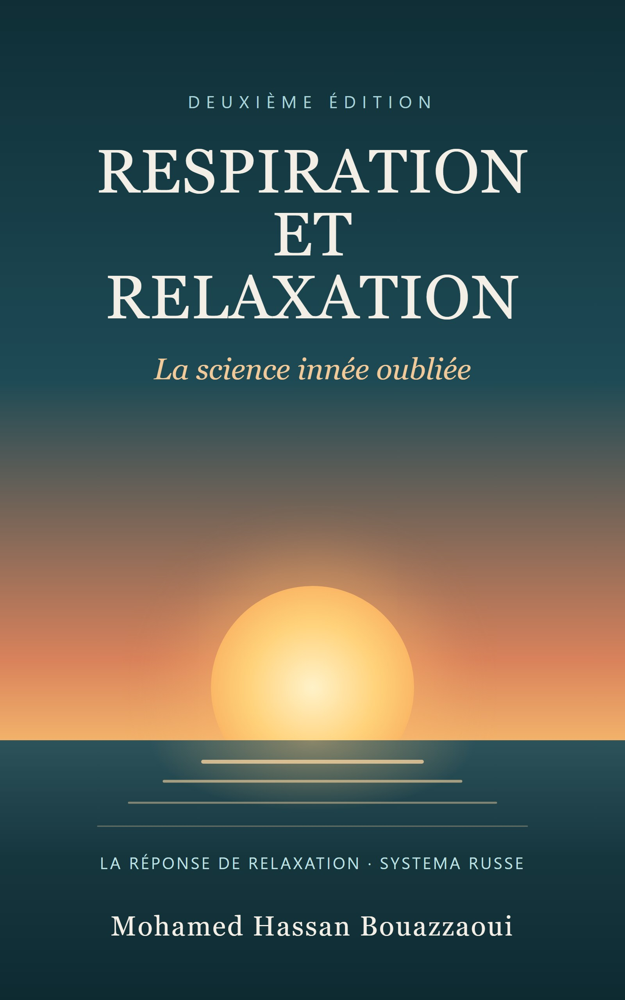

Respiration et relaxation : la science innée oubliée
Deuxième édition, 2026
Traduit de l’anglais (Breathing and Relaxation: The Lost Innate Science)
© 2026 Mohamed Hassan Bouazzaoui. Tous droits réservés. Aucune partie de ce livre ne peut être reproduite ou diffusée sans l’autorisation écrite de l’auteur, à l’exception de courtes citations dans des critiques.
Avertissement santé. Ce livre a une vocation uniquement éducative. Il ne constitue pas un avis médical et ne remplace ni le diagnostic ni le traitement par un professionnel de santé qualifié. Les pratiques décrites ici viennent compléter les soins médicaux, jamais les remplacer. Consultez votre médecin avant de commencer des exercices de respiration ou de relaxation si vous êtes enceinte, ou si vous souffrez d’une maladie cardiaque, pulmonaire, neurologique ou psychiatrique, ou d’un problème de tension artérielle. Arrêtez tout exercice qui provoque des vertiges, une douleur ou un malaise.
À propos des exemples. Les personnes décrites dans les exemples sont des portraits composites créés à des fins pédagogiques ; elles ne correspondent pas à de vrais patients.
Dans un monde qui avance à toute vitesse, le stress est devenu une part inévitable de la vie. Pressions du travail et des relations, flot continu d’informations : notre corps et notre esprit fonctionnent souvent en surrégime. Le stress chronique pèse sur la santé et il est associé à de nombreux troubles, de l’hypertension et du syndrome de l’intestin irritable (SII) aux maladies auto-immunes et aux difficultés de santé mentale.
Et s’il existait un moyen simple, étudié scientifiquement, de contrer les effets du stress ? C’est là qu’intervient le travail du Dr Herbert Benson. Dans les années 1970, ce cardiologue formé à Harvard a décrit la réponse de relaxation : un mécanisme naturel et inné qui s’oppose à la réponse de stress et favorise une détente profonde. Ses recherches ont montré que des pratiques comme la méditation, la prière ou la respiration contrôlée pouvaient déclencher cette réponse, avec des effets mesurables sur le corps.
Au cœur de la réponse de relaxation se trouve la respiration. Elle a ceci d’unique qu’elle est à la fois automatique et volontaire. En modifiant consciemment notre façon de respirer, nous pouvons agir sur notre système nerveux et passer de la réaction de combat ou de fuite à un état de calme et d’équilibre. Ce lien entre souffle et relaxation est au centre de nombreuses pratiques traditionnelles, dont le yoga, le tai-chi et l’art martial russe Systema.
Le Systema, qui signifie « le système », est une approche globale du mouvement, de la respiration et de la relaxation. Développé en Russie, il fait d’une respiration naturelle et sans effort le fondement de la résilience physique et mentale. Ses techniques visent à réduire les tensions, à aiguiser la concentration et à préserver le calme, même dans les situations les plus stressantes.
Ce livre explore la science de la réponse de relaxation et l’art de la respiration du Systema. Il propose des outils concrets pour renforcer la maîtrise de soi, améliorer le bien-être et accompagner les personnes atteintes de maladies chroniques. Que vous souhaitiez gérer votre stress, soutenir votre santé ou simplement vivre de façon plus équilibrée, les pratiques présentées ici peuvent vous aider à puiser dans la force du calme. Le livre se termine par un programme de démarrage en 7 jours pour que vous puissiez commencer dès aujourd’hui.
Que se passe-t-il exactement dans notre corps lorsque nous vivons un stress ? Pour le comprendre, il faut s’intéresser à la physiologie du stress, et en particulier à la réaction de combat ou de fuite, un mécanisme apparu au cours de l’évolution pour nous aider à survivre face au danger.
La réaction de combat ou de fuite est une réaction physiologique automatique face à une menace perçue, qu’elle soit physique, émotionnelle ou psychologique. Elle est orchestrée par le système nerveux sympathique, une branche du système nerveux autonome qui prépare le corps à affronter le danger ou à le fuir. Lorsque le cerveau perçoit une menace, il envoie un signal d’alerte à l’hypothalamus, qui active le système nerveux sympathique.
Cette activation déclenche une cascade de changements hormonaux, en particulier la libération d’adrénaline (épinéphrine) et de cortisol par les glandes surrénales. L’adrénaline accélère le cœur, élève la tension artérielle et augmente l’énergie disponible en stimulant la transformation du glycogène en glucose. Le cortisol, souvent appelé « hormone du stress », augmente la disponibilité du glucose et met temporairement en veille les fonctions qui ne sont pas immédiatement utiles face à un danger vital, comme la digestion et une partie de la réponse immunitaire.
À court terme, la réaction de combat ou de fuite est très utile. Elle aiguise nos sens, augmente notre force et notre vitesse et nous prépare à faire face à une menace immédiate. Les problèmes apparaissent quand cette réaction est déclenchée trop souvent ou trop longtemps. Le stress chronique, c’est-à-dire l’activation persistante de la réaction de combat ou de fuite, peut avoir des effets durables sur l’organisme.
Lorsque le corps est régulièrement inondé d’hormones du stress, la santé peut en souffrir. Un stress prolongé est associé à une tension artérielle plus élevée, qui fatigue le système cardiovasculaire. Il est aussi lié à des troubles digestifs comme le syndrome de l’intestin irritable, et le dérèglement durable du système immunitaire peut rendre le corps plus vulnérable aux infections et aggraver les maladies auto-immunes, dans lesquelles le système immunitaire s’attaque aux propres tissus de l’organisme.
La réaction de combat ou de fuite n’est pas seulement hormonale : elle mobilise aussi des structures clés du cerveau. L’amygdale, un ensemble de noyaux en forme d’amande situé en profondeur dans le cerveau, joue un rôle essentiel dans le traitement des émotions, en particulier de la peur. Lorsqu’elle détecte une menace, elle alerte l’hypothalamus, qui active le système nerveux sympathique.
Le cortex préfrontal, la partie du cerveau responsable de la prise de décision et du raisonnement, aide à moduler cette réaction. Idéalement, il régule l’amygdale et nous permet d’évaluer si une menace perçue est réelle. Sous l’effet d’un stress chronique, cependant, cette régulation peut s’affaiblir et entraîner des réactions de stress exagérées.
Le stress chronique crée un cercle difficile à briser. Les recherches suggèrent qu’un stress prolongé peut modifier la structure et le fonctionnement du cerveau, notamment de l’hippocampe, une région impliquée dans la mémoire et la régulation des émotions. Il devient alors plus difficile de réguler ses émotions, ce qui entretient à son tour la réponse de stress.
Le stress chronique peut aussi favoriser des comportements peu utiles, comme manger de façon excessive, consommer des substances ou s’isoler. Ces comportements créent de nouvelles sources de stress et entretiennent le cercle.
Comprendre la physiologie du stress est la première étape pour briser ce cercle. Dans le chapitre suivant, nous découvrirons la réponse de relaxation décrite par le Dr Herbert Benson, l’opposé biologique de la réponse de stress. En apprenant à l’activer, nous pouvons contrer les effets néfastes du stress chronique et soutenir notre bien-être général.
À la fin des années 1960 et au début des années 1970, le Dr Herbert Benson, cardiologue et chercheur à la Harvard Medical School, a étudié les effets physiologiques de la méditation. Il a identifié une réponse naturelle et innée du corps qu’il a appelée réponse de relaxation, l’opposé biologique de la réaction de combat ou de fuite (Benson, Beary & Carol, 1974). Ses travaux ont donné un cadre scientifique pour comprendre la relaxation, ainsi que des outils pratiques pour en tirer profit.
La réaction de combat ou de fuite, pilotée par le système nerveux sympathique, prépare le corps à affronter une menace immédiate en augmentant la fréquence cardiaque, la tension artérielle et les hormones du stress. La réponse de relaxation, elle, est associée au système nerveux parasympathique, qui favorise le calme et la récupération. Quand elle est activée, le cœur et la respiration ralentissent, la tension artérielle baisse, les muscles relâchent leurs tensions et la consommation d’oxygène du corps diminue.
Le Dr Benson a montré que la réponse de relaxation n’est pas une simple absence de stress, mais un état physiologique actif que l’on peut provoquer volontairement. Il a ainsi démontré que chacun peut contrer activement les effets du stress chronique grâce à des pratiques précises.
Le Dr Benson a décrit des éléments simples qui aident à déclencher la réponse de relaxation. On peut les appliquer à travers de nombreuses pratiques : méditation, prière, yoga, ou même des activités répétitives comme le jogging ou le tricot. Dans ses travaux plus récents, il a souligné que les deux premiers sont les étapes essentielles :
Les travaux du Dr Benson ont été suivis par des décennies d’études sur la relaxation et la respiration. Les principaux effets rapportés sont les suivants :
La réponse de relaxation est aujourd’hui largement reconnue comme un outil de gestion du stress. Des approches proches sont utilisées dans des programmes comme la réduction du stress basée sur la pleine conscience (MBSR) et les thérapies cognitives et comportementales (TCC), ainsi qu’en milieu clinique pour accompagner les personnes atteintes de maladies chroniques. Elle est accessible à tous, quels que soient l’âge, la condition physique ou le parcours, et ne demande aucun matériel particulier.
Dans le chapitre suivant, nous verrons le rôle central de la respiration dans le déclenchement de la réponse de relaxation.
La respiration est l’un des outils les plus fondamentaux et les plus puissants dont nous disposons pour agir sur notre état physiologique et émotionnel. C’est un processus automatique contrôlé par le tronc cérébral, mais que l’on peut aussi réguler consciemment. Cette double nature en fait une porte d’entrée vers la réponse de relaxation.
Le système nerveux autonome (SNA) règle les fonctions involontaires du corps, comme la fréquence cardiaque, la digestion et le rythme respiratoire. Il comporte deux branches principales : le système nerveux sympathique, qui gouverne la réaction de combat ou de fuite, et le système nerveux parasympathique, qui favorise le repos, la détente et la récupération. La respiration contrôlée est l’un des moyens les plus directs de solliciter la branche parasympathique.
Une respiration lente, en particulier avec une expiration plus longue, sollicite le nerf vague, le principal nerf du système parasympathique. Le nerf vague fonctionne comme une voie de communication entre le cerveau et le corps : il aide à ralentir le cœur et favorise la détente. C’est pourquoi la respiration diaphragmatique, dans laquelle l’air descend profondément jusqu’au ventre, est si efficace pour réduire le stress.
Les recherches montrent qu’une respiration lente, autour de six respirations par minute, augmente la variabilité de la fréquence cardiaque (VFC), un indicateur de la capacité du corps à s’adapter au stress (Russo, Santarelli & O’Rourke, 2017 ; Zaccaro et al., 2018). Une VFC plus élevée est associée à une meilleure régulation émotionnelle et à une meilleure santé cardiovasculaire.
On décrit souvent le souffle comme un pont entre le corps et l’esprit. Une respiration lente et rythmée envoie au cerveau des signaux de sécurité, et porter attention à son souffle ramène au moment présent, ce qui interrompt les ruminations et les inquiétudes qui accompagnent souvent le stress. Avec le temps, cette attention consciente au souffle aide à observer ses pensées et ses émotions sans s’y laisser submerger.
Le lien fonctionne dans les deux sens. Quand nous sommes anxieux ou en colère, notre respiration devient courte et rapide ; quand nous sommes calmes, elle devient lente et profonde. En prenant conscience de ce lien, nous pouvons utiliser le souffle pour réguler nos émotions et créer un cercle vertueux de calme.
Les études sur des pratiques comme la respiration diaphragmatique et la respiration lente rythmée indiquent qu’elles peuvent :
Dans la partie suivante, nous découvrirons l’approche du Systema russe de la respiration et de la relaxation, avec ses techniques et sa philosophie propres pour cultiver le calme et la résilience.
Le Systema est souvent présenté comme un art martial russe « de combat et de guérison ». C’est une pratique globale qui met l’accent sur le mouvement naturel, la relaxation et la maîtrise du souffle. Contrairement à de nombreux arts martiaux fondés sur des techniques rigides et des formes figées, le Systema est fluide et adaptable : il cherche à travailler avec les instincts et les rythmes naturels du corps.
Le Systema puise dans les traditions martiales russes et dans des entraînements développés pour des unités militaires et des forces spéciales, qui avaient besoin d’une méthode pratique pour des situations stressantes et imprévisibles. Sous sa forme moderne, il a été enseigné et popularisé à partir des années 1990, notamment par Mikhaïl Riabko et Vladimir Vassiliev, et s’est depuis répandu dans le monde entier. Au-delà de l’autodéfense, ses enseignants le présentent comme un art de vivre qui réunit entraînement physique, respiration, relaxation et conscience de soi.
Le Systema repose sur quatre principes, souvent appelés les quatre piliers : la respiration, la relaxation, la posture et le mouvement. Ils sont liés entre eux et constituent la base de toute pratique du Systema. Sa philosophie considère que la vraie force naît de l’harmonie avec soi-même et avec son environnement : en cultivant la conscience, l’adaptabilité et le calme, les pratiquants apprennent à répondre aux difficultés avec aisance et efficacité, au combat, dans la vie quotidienne ou sous la pression.
Même s’il est né du combat, le Systema applique ses principes à la vie de tous les jours. L’accent qu’il met sur la respiration, la relaxation, la posture et le mouvement en fait un outil efficace pour gérer le stress, soutenir la santé physique et renforcer la résilience émotionnelle.
Le Systema repose aussi sur la conscience de soi. Les pratiquants apprennent à écouter leur corps, à reconnaître la tension et le stress, et à les relâcher par le souffle et le mouvement. Cette attention s’étend aux émotions et aux réactions, ce qui fait du Systema non seulement un art martial, mais aussi un chemin de développement personnel.
Aujourd’hui, le Systema est pratiqué par des personnes de tous horizons : artistes martiaux, sportifs, professionnels de santé ou simplement personnes cherchant à se libérer du stress. Son approche douce et attentive du mouvement peut convenir aux personnes qui se remettent d’une blessure ou vivent avec une douleur chronique, à condition de respecter les limites du corps et, si besoin, l’avis médical. Dans les métiers très exposés au stress, comme les forces de l’ordre, l’armée et les services d’urgence, l’importance qu’il accorde à la respiration et à la relaxation aide à rester calme et à mieux décider sous pression.
La respiration est le fondement du Systema, le pont entre le corps, l’esprit et les émotions. Ce n’est pas seulement un processus physiologique, mais un outil pour cultiver le calme, la concentration et la résilience. Ce chapitre présente la respiration nasale et diaphragmatique, les techniques clés du Systema et la façon dont elles réduisent les tensions et améliorent la concentration.
1. L’échelle respiratoire en marchant. Marchez à allure normale. Inspirez par le nez sur un pas et expirez par la bouche sur un pas. Puis inspirez sur deux pas et expirez sur deux, puis trois et trois, jusqu’à un maximum confortable (par exemple 8), et redescendez jusqu’à un. Si vous manquez de souffle, revenez simplement à un palier inférieur.
2. La respiration en rafales. Après un effort, ou quand vous ressentez une douleur ou une montée de tension, respirez par petites rafales rapides : de brèves inspirations par le nez et de courtes expirations par les lèvres légèrement pincées, comme pour souffler une bougie. Continuez jusqu’à ce que la respiration et le cœur se calment, puis revenez à une respiration nasale lente.
3. Le mouvement guidé par le souffle. Choisissez un mouvement simple, comme une flexion lente des jambes. Laissez le souffle mener : commencez l’inspiration, puis commencez à descendre ; commencez l’expiration, puis remontez. Gardez un mouvement assez lent pour que le souffle ne soit jamais forcé. Le but n’est pas la force, mais de rester détendu en bougeant.
La relaxation est un principe central du Systema, qui reflète l’idée que la vraie force vient de la capacité à rester calme et adaptable face aux difficultés. Les pratiques de relaxation du Systema relâchent les tensions physiques, développent la conscience de soi et favorisent un profond sentiment de paix intérieure.
La relaxation musculaire progressive (RMP) relâche méthodiquement les tensions du corps. Dans le Systema, on l’associe souvent à la respiration :
La RMP développe la conscience du corps et permet de reconnaître et relâcher les tensions avant qu’elles ne deviennent chroniques. Évitez de contracter une zone blessée ou douloureuse.
La pleine conscience consiste à porter attention au moment présent, sans jugement ; la vigilance est la capacité à percevoir son environnement intérieur et extérieur. Le Systema cultive les deux à travers :
Le Systema est plus qu’un art martial : c’est une façon de vivre avec conscience, résilience et aisance. Dans la partie suivante, nous verrons comment associer ses pratiques à la réponse de relaxation pour une approche globale du bien-être.
Dans le monde actuel, qui va très vite, la résilience émotionnelle est une compétence essentielle. La capacité à réguler ses émotions, à gérer le stress et à garder la maîtrise de soi a un impact réel sur la santé mentale et physique. En associant la réponse de relaxation aux techniques de respiration et de relaxation du Systema, vous pouvez vous doter d’outils puissants de résilience émotionnelle.
Les exemples suivants sont des portraits composites créés pour illustrer l’utilisation de ces pratiques. Il ne s’agit pas de cas de vrais patients.
Situation. Jean, 35 ans, a de fréquents accès de colère au travail et à la maison, qui abîment ses relations.
Pratique. Il pratique chaque matin la réponse de relaxation avec un mot simple, et utilise la respiration continue dans les situations tendues.
Ce qui change. Avec le temps, il apprend à repérer les premiers signes de la colère, comme le cœur qui s’emballe et les muscles qui se crispent, et à se calmer par le souffle avant que ses émotions ne débordent.
Situation. Marie, 28 ans, étudiante en master, vit avec des inquiétudes persistantes qui perturbent ses études et son sommeil.
Pratique. Elle pratique la respiration diaphragmatique et la respiration en vague 10 à 15 minutes par jour, en répétant intérieurement le mot « calme ».
Ce qui change. Au bout de quelques semaines, elle se sent moins débordée, utilise la respiration en vague pour rester concentrée pendant ses examens et dort mieux.
Situation. David, 42 ans, pompier, vit des moments de panique lors d’interventions très stressantes.
Pratique. Il s’entraîne à la respiration du Systema, avec la respiration continue et de courtes rétentions contrôlées pendant l’entraînement, et pratique la réponse de relaxation en dehors du service.
Ce qui change. Il se sent plus posé pendant les urgences et prend des décisions plus claires sous pression.
Les pratiques respiratoires peuvent soutenir le bien-être émotionnel, mais elles ne remplacent pas un accompagnement professionnel. Si la colère, l’anxiété, la peur ou un moral bas sont intenses, persistants ou perturbent votre quotidien, parlez-en à un médecin ou à un professionnel de santé mentale.
Les maladies chroniques comme les maladies inflammatoires chroniques de l’intestin (MICI), la fibromyalgie et les maladies cardiovasculaires sont souvent aggravées par le stress. Le stress accentue les symptômes, et les symptômes augmentent à leur tour le stress. Utilisées en complément du traitement médical, la réponse de relaxation et la respiration du Systema peuvent aider à améliorer la qualité de vie.
N’arrêtez ou ne modifiez jamais un traitement sans l’avis de votre médecin. Informez votre équipe soignante des pratiques que vous utilisez, en particulier si vous avez une maladie cardiaque ou pulmonaire.
Intégrer la réponse de relaxation et le Systema à votre quotidien peut changer votre façon de vivre le stress. Ce chapitre propose une démarche simple, étape par étape.
| Si vous êtes… | Essayez ceci |
|---|---|
| Un professionnel très occupé | 1 à 2 minutes de respiration diaphragmatique à votre bureau ; respiration en vague en marchant entre deux réunions. |
| Un parent | Respiration consciente pendant la sieste ou les jeux de votre enfant ; petits jeux de respiration avec les enfants. |
| Une personne âgée | Mouvements doux et respiration adaptés à votre mobilité ; visualisation guidée ou RMP pour la détente et la douleur. |
| Un étudiant | Respiration 4-7-8 avant les examens ou les exposés ; quelques minutes de respiration du Systema pendant les pauses de révision. |
Les sportifs, les secouristes et les militaires vivent des situations qui exigent des performances physiques et mentales maximales. La capacité à gérer le stress, à récupérer vite et à rester concentré peut faire la différence entre la réussite et l’échec, et parfois entre la vie et la mort.
Le lien entre le corps et l’esprit est de plus en plus reconnu en médecine. À mesure que la recherche avance, les pratiques de respiration et de relaxation trouvent une place croissante aux côtés des soins conventionnels.
Tout au long de ce livre, nous avons exploré l’impact de la réponse de relaxation et de la respiration du Systema sur le bien-être physique, mental et émotionnel : de la physiologie du stress aux métiers exposés à de fortes pressions, en passant par la vie avec une maladie chronique. En sollicitant le système nerveux parasympathique et en réduisant le stress, ces pratiques nous aident à devenir acteurs de notre santé et à affronter les défis de la vie avec résilience.
Le chemin vers une vie plus saine, plus calme et plus épanouie commence par une seule respiration. Voici comment faire le premier pas :
L’intégration de ces pratiques à la médecine, à l’éducation et à la santé communautaire est très prometteuse : un monde où chacun a les moyens de prendre soin de sa santé, où le stress est pris en charge tôt et où le bien-être est une priorité pour tous. Le pouvoir de transformer votre vie est en vous. Il commence par une respiration, un instant d’immobilité et l’engagement de prendre soin de votre corps, de votre esprit et de votre âme. Le chemin commence maintenant.
Dix à quinze minutes par jour suffisent pour commencer. Cochez chaque jour réalisé : la régularité compte plus que la durée.
| Jour | Matin (5–10 min) | Pendant la journée | Soir (5 min) |
|---|---|---|---|
| 1 | Respiration diaphragmatique, 5 min | 3 respirations lentes avant chaque repas | Respiration 4-7-8, 4 cycles |
| 2 | Respiration diaphragmatique, 7 min | Respiration continue en marchant | Balayage corporel |
| 3 | Réponse de relaxation avec un mot, 10 min | 1 minute de respiration carrée avant une tâche | Respiration 4-7-8 |
| 4 | Échelle respiratoire en marchant, jusqu’à 6 pas | Pause consciente : repérer et relâcher les tensions | Relaxation musculaire progressive |
| 5 | Réponse de relaxation, 10 min | Respiration en vague pendant un effort simple (escaliers, port de charge) | Gratitude : 3 choses |
| 6 | Flexions guidées par le souffle, 2 × 5 répétitions lentes | Respiration en rafales après un effort | Visualisation guidée avec respiration lente |
| 7 | Votre pratique préférée, 10–15 min | Notez les moments où vous avez le plus eu besoin de votre souffle | Planifiez votre pratique de la semaine suivante |
Au bout d’une semaine, gardez ce qui vous a le mieux réussi et pratiquez-le chaque jour. Beaucoup de personnes remarquent une différence après deux à quatre semaines de pratique régulière.
Les références sont en anglais, langue de publication des travaux cités.
Mohamed Hassan Bouazzaoui a écrit ce livre pour partager des outils simples, éclairés par la science, que chacun peut utiliser pour mieux respirer, gérer son stress et vivre plus sereinement. Il réunit les recherches sur la réponse de relaxation et la sagesse pratique du Systema.
Des exercices guidés, des mises à jour et les autres éditions linguistiques de ce livre sont disponibles sur le site du livre. Vos questions et vos retours sont toujours les bienvenus via la page de contact.